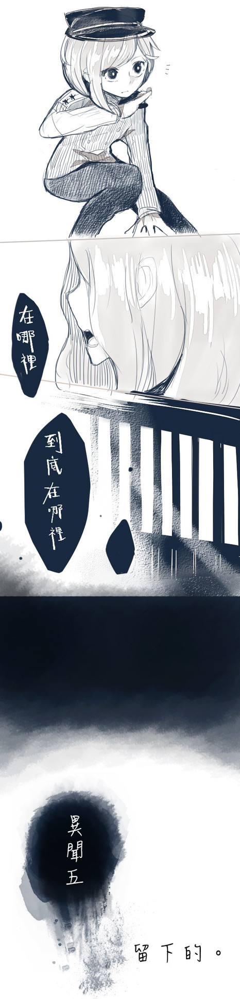

沒有人知道女人從何而來，也沒有人見過其真面目。
……只有這個日落時分會傳出的淒厲哭泣聲，在這條街的人們口中相傳。
——埋在牆裡的秘密。

黃昏時刻。
金黃的餘暉灑落於巷弄，和剛被點亮的招牌相互呼應。
在岔路的轉角，枯樹圍繞的町屋前總會傳來一陣女人的哭泣聲。
好傷心、好傷心呀……
為什麼要背叛我呢？
快回來、快回來呀。
可以原諒你的呦，真的可以……所以呀、所以呀—--
回到我的身邊來吧—--
嗚咽、抽泣、哭喊而後泣不成聲。
然而當有人想一探究竟，只會看見殘破的門板和散落於地的瓦片。
沒有人知道女人從何而來，也沒有人見過其真面目。
……只有這個日落時分會傳出的淒厲哭泣聲，在這條街的人們口中相傳。
╳× ×× ×╳
「那就拜託您了。」
「……請一定要讓家主大人安心。」
委託人深深地、深深地鞠躬，陰影將對方的表情藏的很深。
——只有厄除大人您，才做得到的事情。
「啊……說是這樣說了。」千蒔坐在門前石階上，一手撐著頰仰起腦袋，看著重重枯枝外的黃昏天空。
——狄氏家宅，淒厲哭聲傳出的地點。
火燒雲般鮮紅的顏色在空中蔓延開來，將石塊地也染上一層水染似的橘紅色。
金燦燦的光邊落入地平線之外，只有天邊還有一點點彩霞。
明明鮮豔明亮，卻帶給人一種蕭瑟的感覺……尤其在枯樹襯托下更顯如此。
大概是知道再漂亮的東西也終將消失的緣故吧？
她呼出一口氣，試著暖和即使戴著手袋仍感到冰涼的手。
——人們說，是怨靈作祟。
日落時分、鴉盤枯枝而鳥鳴悽悽。
千蒔歛下眼簾，回想著早上從附近打聽到的情報，以及自己剛才在屋內翻查的結果。
這棟宅邸已經荒廢一陣子，屋主在離開前似乎與家族間有段嚴重的金錢糾紛。
奇怪的是在屋主離開後，屋主最珍貴、許多人爭相搶奪的刀——靈切，不翼而飛。
也就是從那個時候開始，那棟荒廢的宅邸便開始傳出女人淒厲的哭聲。
——只在黃昏時幽幽地響起，在人走近查看時卻又消失無蹤，詭異的哭聲。
屋主有許多情人。
但即使是個花心且風流的男人，卻因身分地位，許多人仍希望能藉此壯大自家族勢力。
漸漸的，人們開始說這宅邸的屋主精神有了問題。
他時常獨自坐在窗邊，對著無人的地方喃喃自語，並隨著時間病情越來越嚴重。
最後，屋主終於……
……
忽然一陣不算銳利卻足以令她半瞇起眼忍受的波動響起。
千蒔迅速地站起，戒備地朝著空氣中不停震盪出異樣波動的方向望去。
那是庭院的深處，乾枯的樹枝後是一堵半繞著宅邸的破舊磚牆，異樣感就是從牆中傳來的。
來了。
千蒔決定先小幅度地往後退，蹲踞在屋子的轉角——也就是對方的視線死角。
她指尖抵在粗礪的石地上保持平衡，身子微微前傾，小心翼翼地探出頭窺看。
庭院前的磚牆已有些斑駁，水洗後褪色般的紅色上又附上了一層薄博的青苔。
如氤氳的煙霧般自牆中竄出，淡色螢光的逐漸勾勒出了一名女人的模樣。
千蒔半瞇起眼，是在那堵牆裡面……埋起來了，還是藏著呢？
「嗚嗚……」細碎的嗚咽聲自那柔和的光中傳出，女人的輪廓漸漸清晰。
只見對方像隨時會飄散在空氣中一樣，長長淡色頭髮垂在身後，女人一步步走到門前。
再往前一些她就會被發現，還真有些糟糕呢。
只怕女人察覺到自己之後就會消失無蹤。
千蒔歛眼，自暗袋掏出了幾枚硬幣夾在指間，打算擲向遠遠的牆面，藉此弄出聲響。
總之，先把對方的注意力引開，再看能否抓住吧？
倏地收緊的掌心以及手腕欲向前拋擲的伸展，在千蒔看見眼前的畫面後忽地止住動作。
黑亮的眸子眨了眨，覺得有些疑惑。
她……在說什麼嗎？
哪……
哪裡……
「在哪裡……到底在哪裡？」
無助、徬徨、寂寞，細小而快要哭出來的聲音。
「快回來啊、快回來啊。」
女人輕撫著門板，手指彷若輕觸著傳達思念般，極度溫柔，也非常悲傷。
「我親愛的，親愛的大人。」回來吧，回來吧。
「為什麼一句不說地離開了？」女人抓著門板，失去支撐般跪了下來。
「我好恨、好恨，我恨您。」
溫柔的嗓音忽然變了調，抓著門板的雙手蜷曲成爪，她嘶啞地哭喊著，一次又一次。
「大人、大人……」
回來吧，回來吧。回到我的身邊來吧。
……不可原諒。
您在哪裡？
求求您，回來吧。
好寂寞……回來吧
不可原諒。
不可原諒。
。
回來吧
不可原諒—--
。
「——不可原諒。」
千蒔忽然感到一陣惡寒，像是一瞬間血液全數凍結，冷到心裡讓人思緒近乎一斷。
在極度寒冷的溫度下卻沒有任何禦寒衣物，現在的她就是這樣的狀況。躲無可躲、承受了這個間接卻沉重無比的恨意。
「——您是誰？」
在千蒔意識過來前，身體為了遏止這不斷蔓延的不適，已經自動做出了防衛的反應。
「糟了……」她壓低著身子，手放在刀側備戰狀態地面對著女人。一不小心就—--
女人單袖掩著半臉，這孩子的武器與其他人不同，除魔者……？她會知道些什麼嗎？
「大人在哪裡？」女人輕聲詢問，而在她身旁的點點螢光隨著她的動作而飄動。
「如果妳說的是這家的屋主……找他做什麼？」
女人圍繞著一股異樣感，千蒔忍不住多了份防備。
嘻嘻嘻。細碎的笑聲自被衣袖摀著著雙唇中傳出，似笑非笑，如哭似泣。
「連您……連您也不願告訴我大人的去向嗎？」
「——不可原諒。」
女人放下摀著嘴的手，低垂的頭看不清表情，開闔的唇不知道究竟在對誰說話。
「不可原諒！」女人尖叫，盈滿淚水的雙眼迸大，她揮舞著衣袖旋呈圓弧，颳起的暴風宛若利刃，將所到之處的枯木毀損殆盡。
「咕、——」好、痛……
要不是逃得快，身體就和那些枯木一樣砍成兩段了，憤怒的女人真可怕啊。
千蒔吞了口唾沫，回頭看了看身後的慘狀。
完全聽不進人說的話，這樣即使要告知實情也難以溝通吧。
……雖然自己應該要慶幸女人沒有逃跑才是。
「大人究竟在哪裡？」
視線重新轉回女人身上，她直接了當地開口，「現在的妳是不可能找到他的，因為——」
還未等千蒔站定，下一波風刃便俐落且不留情地掃了過來，千蒔揮刀將風向稍微地偏移，緊接著翻滾至宅邸的轉角躲下其餘的攻擊，並往庭院深處跑去。
轟！
黑色瞳眸快速地觀察周遭，對方算是有段距離的中距離攻擊，若繼續將戰場停留在庭院，難保不會波及街上的居民。
如果將對方引進屋內，或許還有辦法……
只是動作要快，並且徹底。
一旦猶豫，那揮起的刀刃將會直接刺穿自己的身體。
「嗚。」撓了撓淺杏色瀏海，自己向來不是近戰派的啊，到底為什麼變成這樣啊？
真頭疼啊。
「可惡的人類、可惡的、可恨的、人……」女人緩步地向前走，眼前的場景如此熟悉，在熟悉的感覺過後，心卻越來越沉重。
如果能將這些回憶消除，就不會感到痛苦了。
就不會記得，大人曾與自己一同坐在門廊前看著花樹盛開的繁景。
不會記得大人曾笑著那樣溫柔，小心地擦去自己臉上的塵埃。
也不會記得，陽光透過窗櫺撒在家主大人的身上，朦朧恍惚，那樣的時光有多寧靜美好。
全部——全部都不記得的話就好了。
……大人、家主大人。
她很討厭自己，然而大人對於自己卻傾盡了一生的溫柔。
最後卻捨棄了自己，再也、再也不會握住。
沒有承諾，沒有道別。
好想……您。
越是思慕，就越恨之入骨。
為什麼呢？為什麼啊？
她看著自己的雙手，不停墜下的點點螢光捧在掌心，仿若靈魂正凋零一般。
她是不會哭的，不會像人類一樣地哭的。
因為即使再怎麼偽裝、怎麼模仿，都只是披著人皮的怪物而已。
——但既然是怪物，又為什麼會有心呢？摀住了臉，卻哭不出聲。
哪——親愛的、親愛的大人。
可恨的、可恨的人吶。
只留下自己一人，是多麼難堪、多麼可笑啊。
如果全部都毀掉的話—--
「妳好啊，看這裡？」一道帶著笑意的嗓音打斷了女人的思緒。
女人直覺性地就朝著聲音的源頭揮袖攻擊。
「！」千蒔趕在被攻擊前翻上屋簷，然而她沒有停留太久，因為下一波的風刃已夾帶橫掃戰場之姿襲來，掀起的碎石和塵土幾乎蒙蔽了視線。
「聽我說幾句話嘛，妳是——哇啊！」話語不停被對方的攻擊打斷，完全無法分心只能不停地逃跑。
接下來，是那裡—--
她躍下屋簷輕巧地踩在枯木上，接著一個翻身落地。緊接如骨牌般在枯樹間穿梭，而身後的樹木緊追著自己般不停倒落。
只顧著捕捉那靈巧跑動的女孩子，女人沒有意識到對方的意圖而再次揮袖。
哎。
千蒔一笑，迅速地向後躍開，而失去基底的枯木就這麼往女人的方向倒下。
「……！」女人眼神一凜腳一旋，揚起的風刃讓木塊於空硬生斷裂，她止袖而半步不移。
塵沙落地，四周了無聲響。
「給逃了嗎……？」女人放眼望去已經沒有女孩子的身影了。
她轉頭看向宅邸，自己方才的攻擊產生了一個裂口……進屋的入口。
原來如此，她的攻擊被利用了，對方藉此製造了逃走的路線。
也罷。
她邁步向前，微光如螢閃爍盤旋。
╳× ×× ×╳
如果早上得到的情報是正確的，那麼……
千蒔迅速掃視屋內，將拉門一扇扇拉開，並不停地跑著。
一定能看見這樣的現象—--
轟！
風刃掃破了紙門阻止了千蒔前進，在屋內逃跑的空間變小了，同時也更不方便。
千蒔腳踏上桌面，一個使力將之翻轉，立起儼然如一座小型城牆。
但同樣的，千蒔半瞇起黑色眸子，女人的攻擊變弱了。
更為緩慢，同時破壞力也明顯下降，甚至連形體也不太穩定了起來。
現在即使自己躲在翻起的木桌後也不會被攻擊到。
女人同樣也發現了這一點。
……她看著自己的形體變得有些透明，藍色螢光剝落了下來，就像是快要消失了一樣。
「那是因為，妳離自己的本體太遠了。」
即使看不見對方，千蒔仍好整以暇地用明知道答案的句子問道，「我答對了嗎？」
語落她眨了眨眼，雖然躲在木桌後頭，但她的聲音仍清晰地傳至對方那頭：
「靈切。」
這聲喚的，是那把在狄氏家主死去後消失無蹤的靈刀之名。